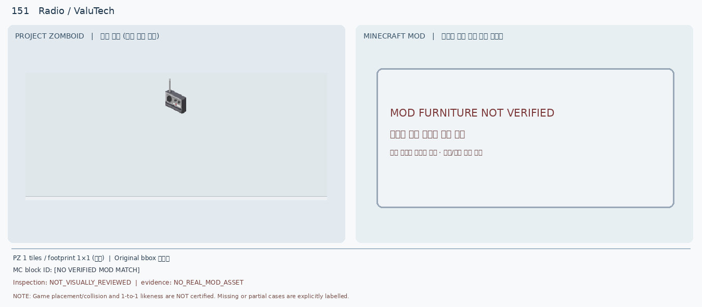
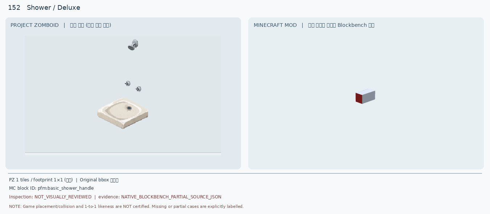
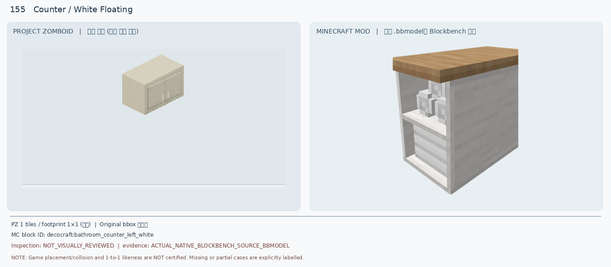
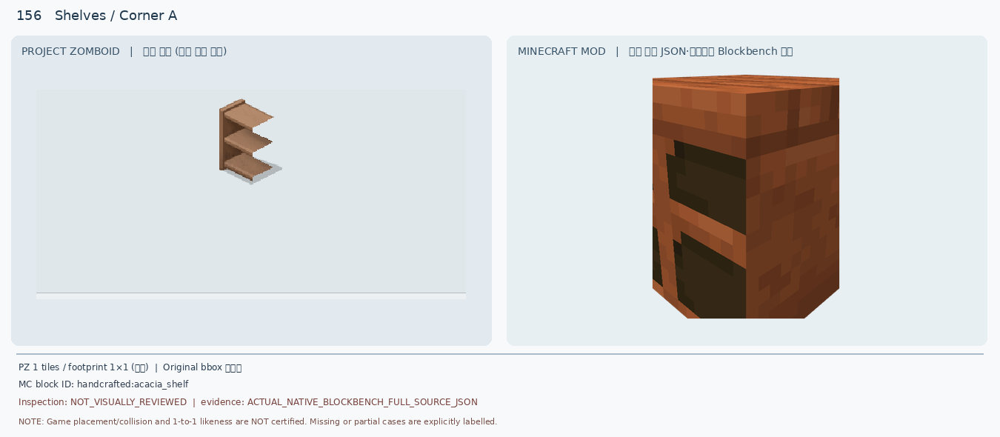
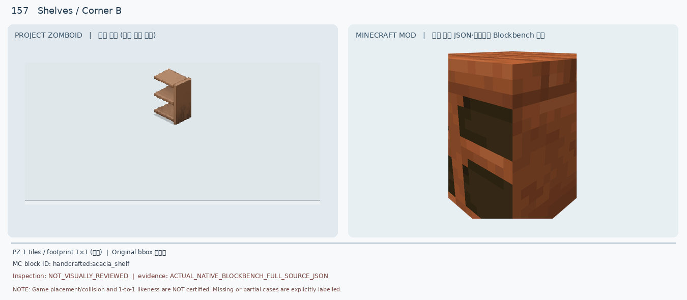
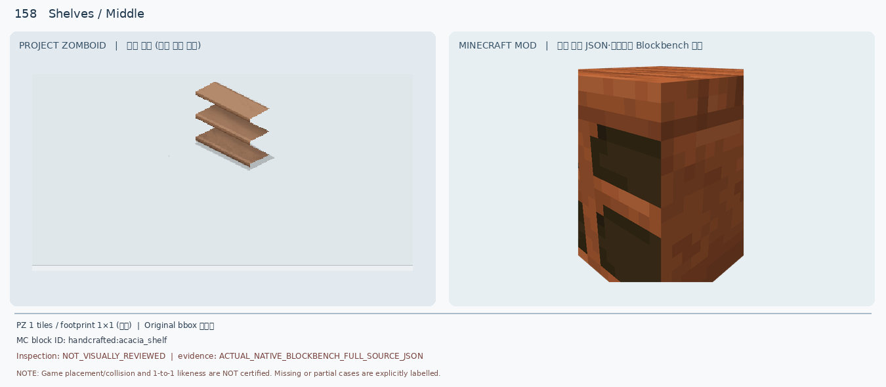
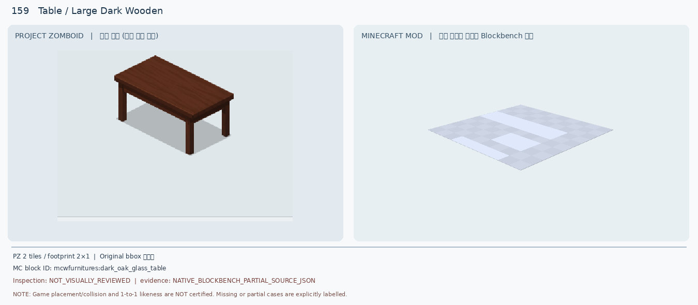
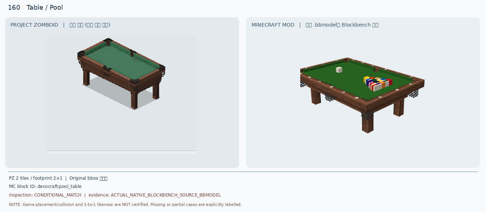

Rosewood 151–160 · manual visual re-review
기존 소스 비교 JPG 재사용 · 신규 렌더 0 · 조건부 1 / 보류 9 / 인게임 승인 0
151 Radio / ValuTech · DEFER
Portable silver/black rectangular radio with vertical aerial and circular dial/speaker
판정: No actual MC radio source/model found in existing inspected candidate list; do not invent a radio model

Find source-verified tabletop portable radio with antenna and working radio analogue
152 Shower / Deluxe · DEFER
White square raised shower base, round drain, detached chrome head and wall controls
판정: MC render shows only a small rectangular red/grey handle, not tray, plumbing or shower head

Search complete shower enclosure/base/head; verify 1x1 plumbing and wall attachment
153 Shelves / Beige Rack Shop · DEFER
Long beige 4-tile shop rack, 3 open shelf levels, upright end frames and thin rods
판정: MC single orange/brown blocky shelf has solid sides and no continuous 4x1 open rack geometry

Find real 4x1 retail gondola/rack or verified repeatable multipart modular model
154 Barbecue / Charcoal · DEFER
Red rounded dome lid on black kettle bowl, three slim angled legs
판정: MC partial render is separated tall grey post and black cuboid; no red dome, kettle bowl or tripod

Check Decocraft grill_black full BBMODEL or another verified red kettle charcoal grill
155 Counter / White Floating · DEFER
Solid cream wall-mounted closed cabinet with two front doors and small vertical handles
판정: MC model is an open white bathroom counter with wood top and visible shelves/bottles; not a closed hanging cabinet

Search closed ivory wall-mounted double-door cabinet, no counter top
156 Shelves / Corner A · DEFER
Brown left end section of three open horizontal shelves with left back/support panel
판정: MC orange closed boxy cubby is not three open protruding shelves; left/right geometry unverified

Find 3-tier brown open modular shelving left-end source model
157 Shelves / Corner B · DEFER
Brown right end section with right-side support and three open projecting shelf boards
판정: Same MC candidate reused for opposite PZ end; cannot encode both handed variants as shown

Find 3-tier brown open modular shelving right-end source model
158 Shelves / Middle · DEFER
Three brown horizontal open floating shelf boards without side panel
판정: MC full orange solid cabinet/shelf body with thick top and sides, not open center piece

Find source-verified 3-tier open shelf center segment and test joins to 156/157
159 Table / Large Dark Wooden · DEFER
Long dark walnut wood tabletop with four straight legs, 2x1 footprint
판정: MC proof renders a pale flat glass-textured plane, no dark wooden top or legs; partial model

Find source-rendered 2x1 dark oak four-leg table, verify multiblock and collision
160 Table / Pool · CONDITIONAL_VISUAL_ONLY
Green felt pool table, brown rails, six pockets and four legs, empty top
판정: MC has recognisable matching felt/wood/legs/pockets but visible coloured racked balls and cue ball; prior MC model bounds ~3x2 blocks versus PZ 2x1

Verify actual Minecraft 3x2 footprint, placement, rotation and game function; seek 2x1/empty variant
상세 설명 · SHA-256